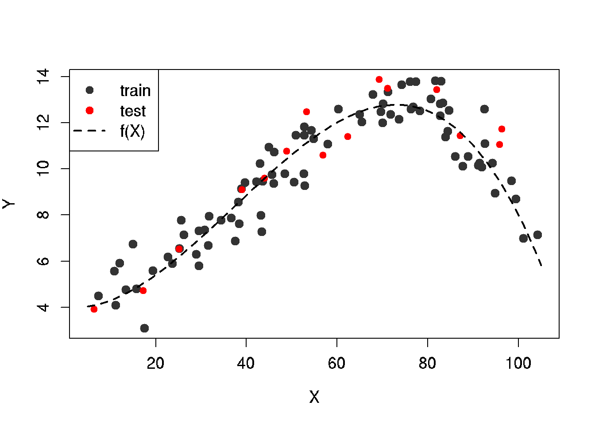
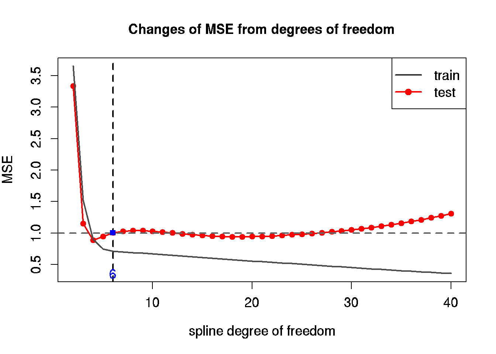

Chapter 30 Spline model
30.1 Splines
30.2 Area under the curve using spline method
Area under the plasma drug concentration-time curve
In the field of pharmacokinetics, the area under the curve (AUC) is the definite integral in a plot of drug concentration in blood plasma vs. time. In practice, the drug concentration is measured at certain discrete points in time and the trapezoidal rule is used to estimate AUC.
We can find spline curve and calculate area under the curve to improve the result and compair with trapezoidal method. The AUC represents the total drug exposure over time (Wiki)
.
Data: Dependency of concentration (mg/L) from time (h).
Aim: Plot curve and calculate the area under the curve
library(MESS)
time <- c(0.5,1,2,4,8,12,18,24,36,48,72)
conc <- c(5.36,9.35,17.18,25.78,29.78,26.63,19.4,13.26,5.88,2.56,0.49)
mod <- smooth.spline(time, conc)
predict.xy <- predict(mod, x=seq(from=min(time), to=max(time), by=(max(time)-min(time))/((length(time)*10))))
plot(conc ~ time, pch=19, xlab='Time, h', ylab='Concentration, mg/L')
lines(time, conc, col='green')
lines(predict.xy, col='red')# Calculate area under the curve (auc)
# trapezoidal method
MESS::auc(time, conc, from=min(time), to=max(time), type='linear')## [1] 721.9925# spline with given data
MESS::auc(time, conc, from=min(time), to=max(time), type='spline')## [1] 712.7034# trapezoidal method with expanded set from predicted spline
MESS::auc(predict.xy[[1]], from=min(time), to=max(time), predict.xy[[2]], type='linear')## [1] 712.4289# spline from expanded with spline
MESS::auc(predict.xy[[1]], from=min(time), to=max(time), predict.xy[[2]], type='spline')## [1] 712.710630.3 Set data using given function and predict curve using spline method
Aim: Generate random data with noise \(y = f(x) + \epsilon\) from function \(f(x)=4-0.02x+0.0055x^2-4.9*10^{-5}x^3; \epsilon ~ N(0,1)\)
Make a model using spline method.
my.seed <- 1
n.all <- 100 # amount of elements
# set x values
set.seed(my.seed)
x.min <-5
x.max <- 105
x <- runif(n.all, x.min, x.max) # set rundom x from 5 to 105 with n elements
# noise
set.seed(my.seed)
noise.sd <-1 # noise standard deviation
noise <- rnorm(mean=0, sd=noise.sd, n=n.all)
# subset train data
set.seed(my.seed)
train.percent <- 0.85 # percent of train data
inTrain <- sample(seq_along(x), size=(train.percent*n.all))
# true function y=f(x)
y.func <- function(x) {4 - 2e-02*x + 5.5e-03*x^2 - 4.9e-05*x^3}
# for plot of true values
x.line <- seq(x.min, x.max, length=n.all)
y.line <- y.func(x.line)
# true function with noise
y <- y.func(x) + noise
# train values
x.train <- x[inTrain]
y.train <- y[inTrain]
# test values
x.test <- x[-inTrain]
y.test <- y[-inTrain]
# plot
x.lim <- c(x.min, x.max)
y.lim <- c(min(y), max(y))
plot(x.train, y.train,
col = grey(0.2), bg = grey(0.2), pch = 21,
xlab = 'X', ylab = 'Y',
xlim = x.lim, ylim = y.lim,
cex = 1.2, cex.lab = 1.2, cex.axis = 1.2)
# test data
points(x.test, y.test, col = 'red', bg = 'red', pch = 21)
# true function
lines(x.line, y.line, lwd = 2, lty = 2)
# legend
legend('topleft', legend = c('train', 'test', 'f(X)'),
pch = c(16, 16, NA),
col = c(grey(0.2), 'red', 'black'),
lty = c(0, 0, 2), lwd = c(1, 1, 2), cex = 1.2) ## Splain model As a model of given data we will use splains with degree of freedom from 2 (line) to 60 (number of knots is equal 2/3 from number of values).
# build spline model with degrees of freedom df=6
mod <- smooth.spline(x = x.train, y = y.train, df = 6)
# model values for calculation of errors
y.model.train <- predict(mod, data.frame(x = x.train))$y[, 1]
y.model.test <- predict(mod, data.frame(x = x.test))$y[, 1]
# sum of squared errors
MSE <- c(sum((y.train - y.model.train)^2) / length(x.train),
sum((y.test - y.model.test)^2) / length(x.test))
names(MSE) <- c('train', 'test')
round(MSE, 2)## train test
## 0.71 1.00# build models with degree of freedoms from df 2 to 60
# максимальное число степеней свободы для модели сплайна
max.df <- 60
tbl <- data.frame(df = 2:max.df) # таблица для записи ошибок
tbl$MSE.train <- 0 # столбец: ошибки на обучающей выборке
tbl$MSE.test <- 0 # столбец: ошибки на тестовой выборке
# for each degree of freedom
for (i in 2:max.df) {
mod <- smooth.spline(x = x.train, y = y.train, df = i)
# model for train and test data
y.model.train <- predict(mod, data.frame(x = x.train))$y[, 1]
y.model.test <- predict(mod, data.frame(x = x.test))$y[, 1]
# errors for train and learn data
MSE <- c(sum((y.train - y.model.train)^2) / length(x.train),
sum((y.test - y.model.test)^2) / length(x.test))
tbl[tbl$df == i, c('MSE.train', 'MSE.test')] <- MSE
}
head(tbl)## df MSE.train MSE.test
## 1 2 3.6484333 3.3336892
## 2 3 1.5185881 1.1532857
## 3 4 0.8999800 0.8874002
## 4 5 0.7477105 0.9483290
## 5 6 0.7127908 1.0038393
## 6 7 0.7000429 1.0300354# Diagram: dependence of MSE from moedel flexibility
plot(x = tbl$df, y = tbl$MSE.test,
type = 'l', col = 'red', lwd = 2,
xlab = 'Degree of freedom', ylab = 'MSE',
ylim = c(min(tbl$MSE.train, tbl$MSE.test),
max(tbl$MSE.train, tbl$MSE.test)),
cex = 1.2, cex.lab = 1.2, cex.axis = 1.2)
# head of plot
mtext('Dependence of MSE from degree of freedom', side = 3)
points(x = tbl$df, y = tbl$MSE.test, pch = 21, col = 'red', bg = 'red')
lines(x = tbl$df, y = tbl$MSE.train, col = grey(0.3), lwd = 2)
# неустранимая ошибка
abline(h = noise.sd, lty = 2, col = grey(0.4), lwd = 2)
# легенда
legend('topleft', legend = c('обучающая', 'тестовая'),
pch = c(NA, 16),
col = c(grey(0.2), 'red'),
lty = c(1, 1), lwd = c(2, 2), cex = 1.2)
# степени свободы у наименьшей ошибки на тестовой выборке
min.MSE.test <- min(tbl$MSE.test)
df.min.MSE.test <- tbl[tbl$MSE.test == min.MSE.test, 'df']
# компромисс между точностью и простотой модели по графику
df.my.MSE.test <- 6
my.MSE.test <- tbl[tbl$df == df.my.MSE.test, 'MSE.test']
# ставим точку на графике
abline(v = df.my.MSE.test, lty = 2, lwd = 2)
points(x = df.my.MSE.test, y = my.MSE.test, pch = 15, col = 'blue')
mtext(df.my.MSE.test, side = 1, line = -1, at = df.my.MSE.test, col = 'blue', cex = 1.2)# График 3: Лучшая модель (компромисс между гибкостью и точностью) ############
mod.MSE.test <- smooth.spline(x = x.train, y = y.train, df = df.my.MSE.test)
# для гладких графиков модели
x.model.plot <- seq(x.min, x.max, length = 250)
y.model.plot <- predict(mod.MSE.test, data.frame(x = x.model.plot))$y[, 1]
# убираем широкие поля рисунка
par(mar = c(4, 4, 1, 1))
# наименьшие/наибольшие значения по осям
x.lim <- c(x.min, x.max)
y.lim <- c(min(y), max(y))
# наблюдения с шумом (обучающая выборка)
plot(x.train, y.train,
col = grey(0.2), bg = grey(0.2), pch = 21,
xlab = 'X', ylab = 'Y',
xlim = x.lim, ylim = y.lim,
cex = 1.2, cex.lab = 1.2, cex.axis = 1.2)
# head of the plot
mtext('Initial data and the best fit model', side = 3)
# test values
points(x.test, y.test,
col = 'red', bg = 'red', pch = 21)
# true function
lines(x.line, y.line, lwd = 2, lty = 2)
# model
lines(x.model.plot, y.model.plot, lwd = 2, col = 'blue')
# legend
legend('topleft', legend = c('train', 'test', 'f(X)', 'model'),
pch = c(16, 16, NA, NA),
col = c(grey(0.2), 'red', 'black', 'blue'),
lty = c(0, 0, 2, 1), lwd = c(1, 1, 2, 2), cex = 1.2)In interpolating problems, spline interpolation is often preferred to polynomial interpolation because it yields similar results, even when using low degree polynomials, while avoiding Runge’s phenomenon for higher degrees.
=======
In this example we will generate data from a given function and then build a model using splines and estimate quality of the model.
30.4 Generate dataset from a given function
# parameters to generate a dataset
n.all <- 100 # number of observations
train.percent <- 0.85 # portion of the data for training
res.sd <- 1 # standard deviation of noise
x.min <- 5 # min limit of the data
x.max <- 105 # max limit of the data
# generate x
set.seed(1) # to get reproducible results by randomizer
x <- runif(x.min, x.max, n = n.all)
# noise from normal destibution
set.seed(1)
res <- rnorm(mean = 0, sd = res.sd, n = n.all)
# generate y using a given function
y.func <- function(x) {4 - 2e-02*x + 5.5e-03*x^2 - 4.9e-05*x^3}
# add noise
y <- y.func(x) + res30.5 Split data for train and test
# split dataset for training and test
set.seed(1)
# generate vector of chosen x for train data
inTrain <- sample(seq_along(x), size = train.percent*n.all)
# train data set
x.train <- x[inTrain]
y.train <- y[inTrain]
# test data set
x.test <- x[-inTrain]
y.test <- y[-inTrain]30.6 Diagram of the given function and generated datasets
# lines of generated data for plot
x.line <- seq(x.min, x.max, length = n.all)
y.line <- y.func(x.line)
# PLOT
# generate plot by train data
par(mar = c(4, 4, 1, 1)) # reduce margins (optional)
plot(x.train, y.train,
main = 'Generated data and original function',
col = grey(0.2), bg = grey(0.2), pch = 21,
xlab = 'X', ylab = 'Y',
xlim = c(x.min, x.max),
ylim = c(min(y), max(y)),
cex = 1.2, cex.lab = 1.2, cex.axis = 1.2)
# add points of test data
points(x.test, y.test, col = 'red', bg = 'red', pch = 21)
# add the given function
lines(x.line, y.line, lwd = 2, lty = 2)
# add legend
legend('topleft', legend = c('train', 'test', 'f(X)'),
pch = c(16, 16, NA),
col = c(grey(0.2), 'red', 'black'),
lty = c(0, 0, 2), lwd = c(1, 1, 2), cex = 1.2)
30.7 Build a model using splines
We will compair sevaral models with degree of freedoms (df) from 2 to 40, where 2 correspond to a linear model.
max.df <- 40 # max degree of freedom (df)
#
tbl <- data.frame(df = 2:max.df) # data frame for writing errors
tbl$MSE.train <- 0 # column 1: errors of train data
tbl$MSE.test <- 0 # сcolumn 2: errors of test data
# generate models using for cycle
for (i in 2:max.df) {
mod <- smooth.spline(x = x.train, y = y.train, df = i)
# predicted values for train and test data using built model
y.model.train <- predict(mod, data.frame(x = x.train))$y[, 1]
y.model.test <- predict(mod, data.frame(x = x.test))$y[, 1]
# MSE errors for train and test data
MSE <- c(sum((y.train - y.model.train)^2) / length(x.train),
sum((y.test - y.model.test)^2) / length(x.test))
# write errors to the previously created data frame
tbl[tbl$df == i, c('MSE.train', 'MSE.test')] <- MSE
}
# view first rows of the table
head(tbl, 4)## df MSE.train MSE.test
## 1 2 3.6484333 3.3336892
## 2 3 1.5185881 1.1532857
## 3 4 0.8999800 0.8874002
## 4 5 0.7477105 0.948329030.8 Diagram of MSE for train and test data
# plot MSE from our table
plot(x = tbl$df, y = tbl$MSE.test,
main = "Changes of MSE from degrees of freedom",
type = 'l', col = 'red', lwd = 2,
xlab = 'spline degree of freedom', ylab = 'MSE',
ylim = c(min(tbl$MSE.train, tbl$MSE.test),
max(tbl$MSE.train, tbl$MSE.test)),
cex = 1.2, cex.lab = 1.2, cex.axis = 1.2)
# add
points(x = tbl$df, y = tbl$MSE.test,
pch = 21, col = 'red', bg = 'red')
lines(x = tbl$df, y = tbl$MSE.train, col = grey(0.3), lwd = 2)
# minimal MSE
abline(h = res.sd, lty = 2, col = grey(0.4), lwd = 2)
# add legend
legend('topright', legend = c('train', 'test'),
pch = c(NA, 16),
col = c(grey(0.2), 'red'),
lty = c(1, 1), lwd = c(2, 2), cex = 1.2)
# df of minimal MSE for test data
min.MSE.test <- min(tbl$MSE.test)
df.min.MSE.test <- tbl[tbl$MSE.test == min.MSE.test, 'df']
# optimal df for precise model and maximal simplicity
df.my.MSE.test <- 6
my.MSE.test <- tbl[tbl$df == df.my.MSE.test, 'MSE.test']
# show the optimal solution
abline(v = df.my.MSE.test,
lty = 2, lwd = 2)
points(x = df.my.MSE.test, y = my.MSE.test,
pch = 15, col = 'blue')
mtext(df.my.MSE.test,
side = 1, line = -1, at = df.my.MSE.test, col = 'blue', cex = 1.2)
30.9 Build optimal model and plot for the model
mod.MSE.test <- smooth.spline(x = x.train, y = y.train, df = df.my.MSE.test)
# predict data for 250 x's to get smoothed curve
x.model.plot <- seq(x.min, x.max, length = 250)
y.model.plot <- predict(mod.MSE.test, data.frame(x = x.model.plot))$y[, 1]
# plot train data
par(mar = c(4, 4, 1, 1))
plot(x.train, y.train,
main = "Initial data and the best fit model",
col = grey(0.2), bg = grey(0.2), pch = 21,
xlab = 'X', ylab = 'Y',
xlim = c(x.min, x.max),
ylim = c(min(y), max(y)),
cex = 1.2, cex.lab = 1.2, cex.axis = 1.2)
# add test data
points(x.test, y.test, col = 'red', bg = 'red', pch = 21)
# function
lines(x.line, y.line,lwd = 2, lty = 2)
# add model
lines(x.model.plot, y.model.plot, lwd = 2, col = 'blue')
# legend
legend('topleft', legend = c('train', 'test', 'f(X)', 'model'),
pch = c(16, 16, NA, NA),
col = c(grey(0.2), 'red', 'black', 'blue'),
lty = c(0, 0, 2, 1), lwd = c(1, 1, 2, 2), cex = 1.2)